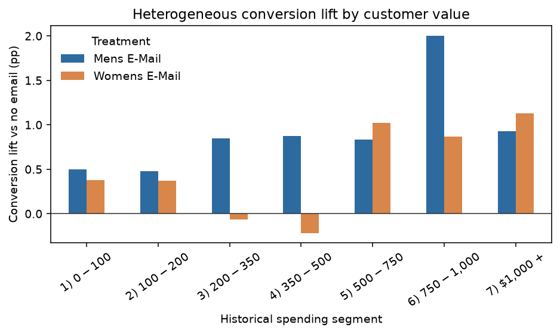

决策问题：邮件营销是否带来超出自然购买的增量访问、购买和收入？如果要扩量，男装邮件、女装邮件和选择性投放应该如何排序？
营销团队通常能看到“发过邮件的人买了多少”，但这不能回答邮件是否真正带来了增量。没有邮件的人也可能自然购买；如果把发送后的全部销售额归因给邮件，预算会被高估。
因此，本项目把问题从“邮件组销售额是多少”改写为“相对于不发邮件，邮件带来了多少额外结果”，并进一步连接到预算和利润决策。
Hillstrom Email Marketing Dataset 包含一个公开的三组随机营销实验：客户被分到男装邮件、女装邮件或不发邮件。它同时有处理变量、访问、购买、消费金额和投放前客户特征，能够支持从描述性分析走到因果效果和商业 ROI。
visit、conversion、spend数据来源：MineThatData 原始说明 · 原始 CSV
| 指标 | 定义 | 业务含义 |
|---|---|---|
| Visit rate | visit / customers | 邮件带来的访问增量 |
| Conversion rate | conversion / customers | 客户层面的购买概率 |
| 客均消费 | spend / customers | 每触达客户带来的收入 |
| 增量利润 | 客均消费增量 × 毛利率 - 邮件成本 | 是否值得扩量 |
分析采用客户级 ITT（按随机分配比较），不把“打开邮件”或“访问网站”当成处理条件，避免产生选择偏差。
先检查字段类型、缺失值、重复值和三组样本量，再对 recency、history、mens、womens、newbie 以及历史消费、地区和渠道计算标准化均值差异（SMD）。两种邮件组相对控制组的最大绝对 SMD 分别约为 0.016 和 0.014，支持投放前可比。
以不发邮件组为控制组，计算访问率、转化率和客均消费差异；访问率和转化率使用两比例比较，客均消费使用 Welch 检验；对客均消费差异使用 1,200 次客户级 Bootstrap 生成 95% 区间。
按历史消费、是否新客和渠道分组重新计算差异。由于 spend 是收入而不是利润，设置毛利率 20%、40%、60%与邮件成本 $0.01、$0.05、$0.10 的情景，计算增量利润和 ROI。
| 处理 | 访问率提升 | 转化率提升 | 客均消费增量 | Bootstrap 95% CI |
|---|---|---|---|---|
| 男装邮件 | +7.66 pp | +0.681 pp | +$0.772 | [$0.487, $1.056] |
| 女装邮件 | +4.52 pp | +0.311 pp | +$0.424 | [$0.146, $0.681] |
在 40% 毛利率、每封邮件成本 $0.05 的情景下，两种邮件的模型增量利润均为正；当女装邮件成本升到 $0.10 时，模型增量利润转负。历史消费分层显示男装邮件在多个消费区间保持正向，女装邮件在部分中间消费段较弱。


spend 是收入，不是利润；真实 ROI 需要邮件成本、毛利、退货、退订和长期价值。